Лабараторная работа №3.
Настройка локальной сети передачи данных.
Отчет по лабораторной работе:
Расчет диапазонов подсетей
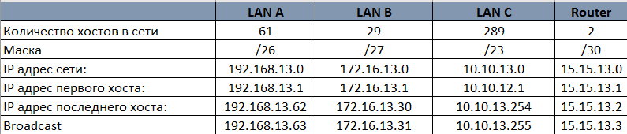
1) Разместить на рабочем поле коммутатор и два компьютера и соединить их
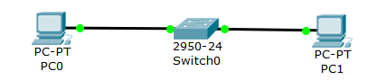
2) Подключить консольный кабель для настройки оборудования
3) Настроить адресацию на добавленных компьютерах
PC0:
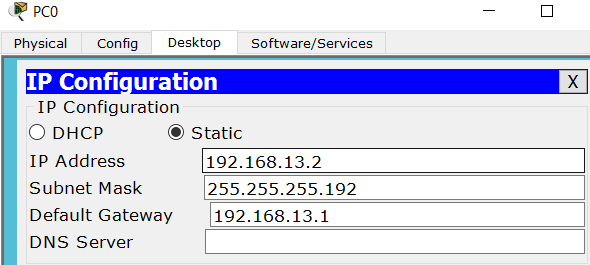
PC1:
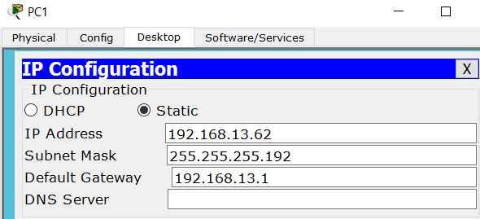
4) Выполнить проверку работоспособности сети
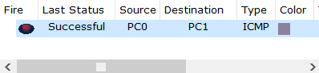
5) Добавить на рабочее поле еще один коммутатор с двумя компьютерами и настроить адресацию из другой подсети
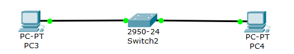
PC3:
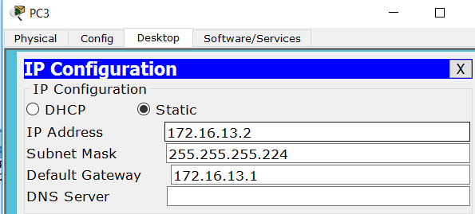
PC4:
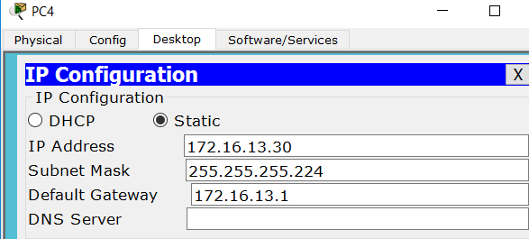
6) Соединить коммутаторы между собой и проверить работоспособность сети
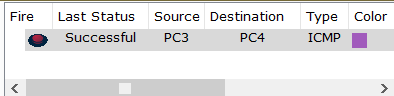
7) В случае неработоспособности сети объяснить причин
8) Добавить маршрутизатор на рабочее поле
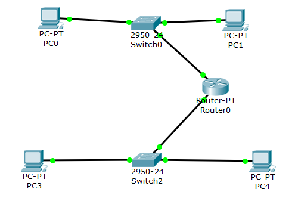
9) Настроить интерфейсы маршрутизатора для существующих подсетей
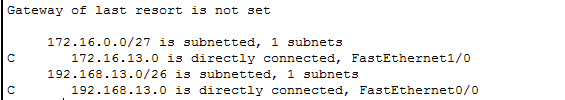
10) Проверить работоспособность сети
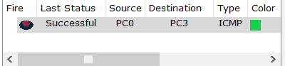
11) В случае неработоспособности сети объяснить причины
12) Указать шлюз по умолчанию и отправить сообщение
13) Добавить на рабочее поле еще один маршрутизатор
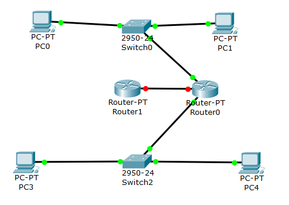
14) Подключить к нему коммутатор и компьютер
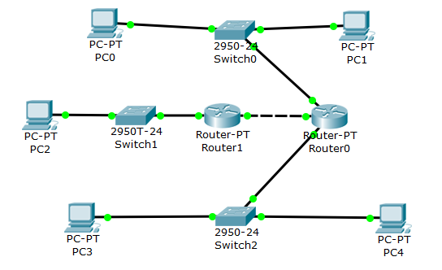
15) Настроить сетевые настройки согласно таблице ниже
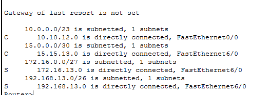
16) Соединить между маршрутизаторы и настроить между ними сеть с префиксом /30
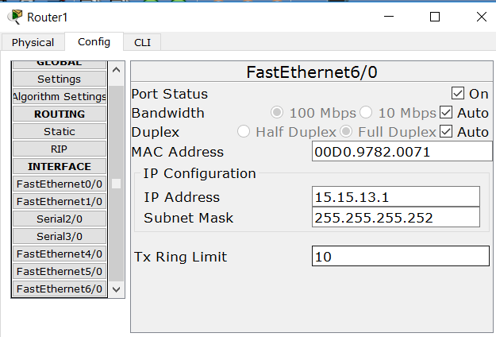
17) Проверить работоспособность сети, отправив сообщение сети A в сеть С и из сети В в сеть С
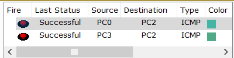
18) В случае неработоспособности сети объяснить причины
19) Настроить статическую маршрутизацию между сетями
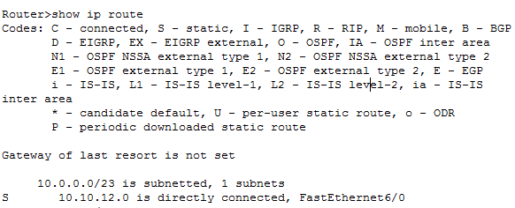
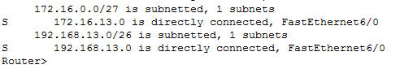
20) Настроить на сетевых устройствах пароли для привилегированного режима
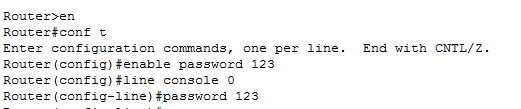
21) Настроить пароли на сетевых устройствах пароли на подключение через консоль и telnet
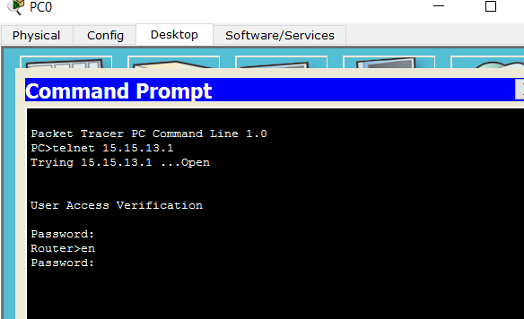
22) Установить баннер на сетевое оборудование
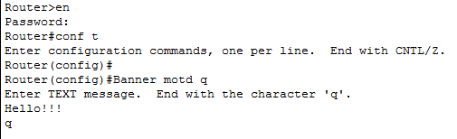
23) Проверить работу удаленного подключения
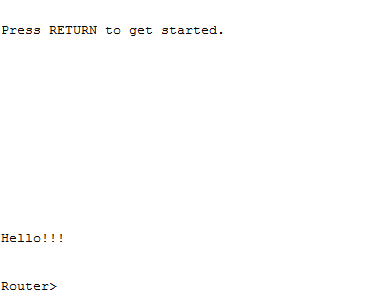